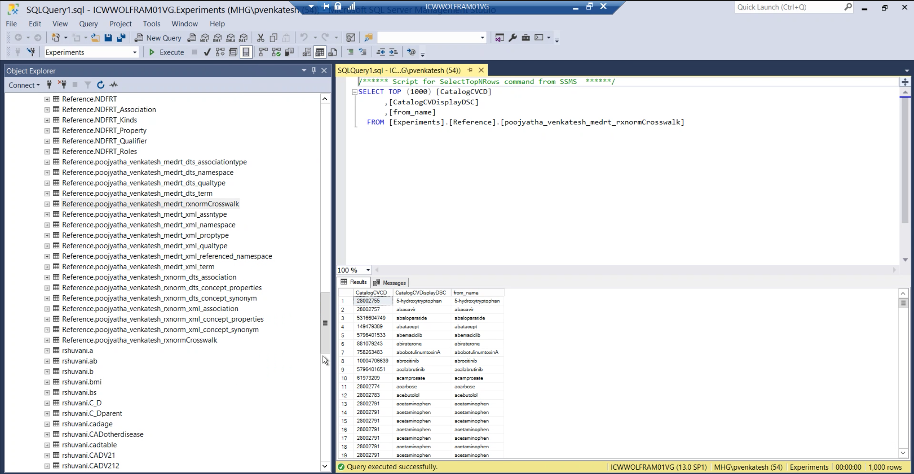
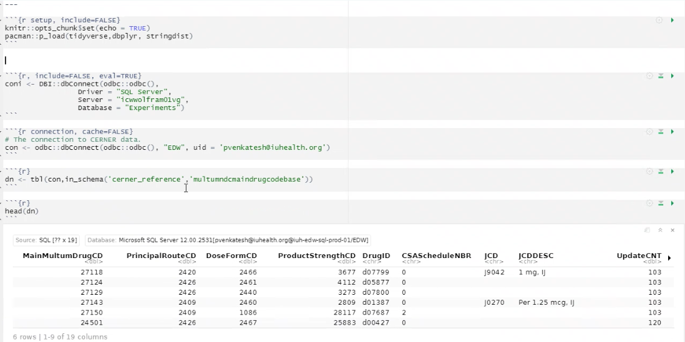
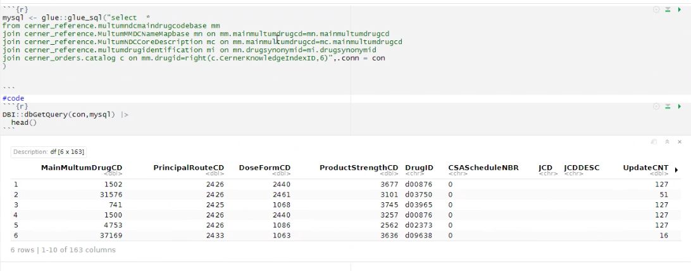
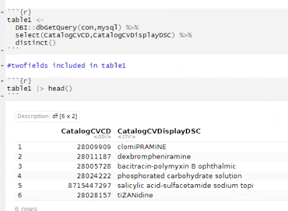
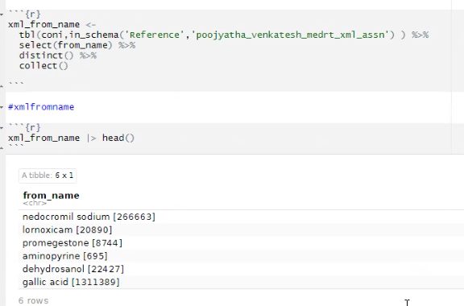
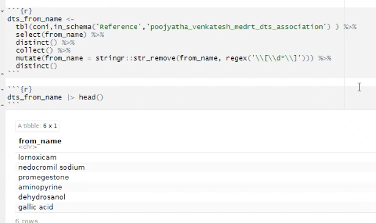
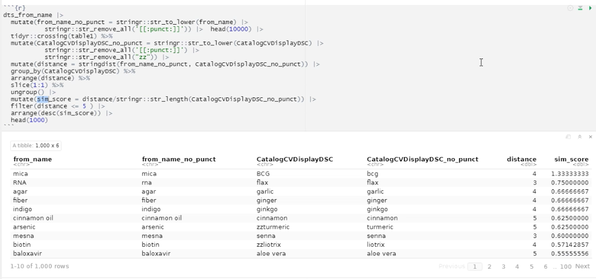
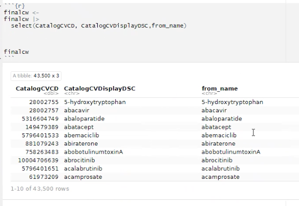
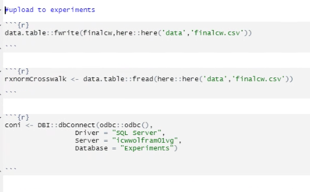
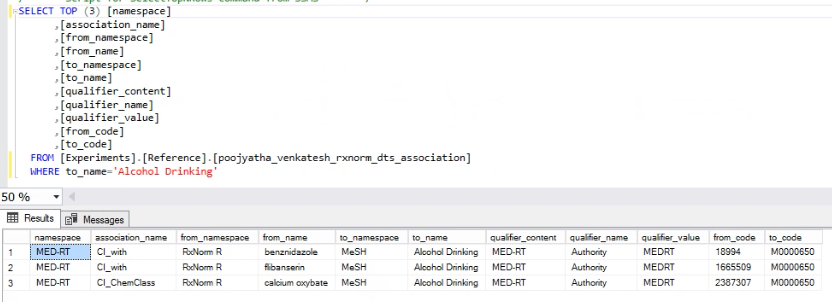

IU Health Documentation part 2 (this is a presentation so swipe left or hit pageup/pagedown)
MICROSOFT SQL SERVER
Now that we have seen how a complex xml document can be converted into a csv files, the next step we do is that we try to upload these files to the Microsoft SQL Server.
[For next slide, swipe left if you’re vieweing through a mobile phone, if you’re using a PC, hit ‘pageup/pagedown’]
Finding Commonalities between patient data and drug data
The next step was to find out commonalities between this data (data that was already existing in the IU Health server) and the data on MSS (microsoft sql server , in other words, that data that we uploaded).
Upon some exploration, I found that CatalogCVDisplayDSC column from the above screenshot and a column called from_name from one of the uplaoded tables called association were the same. So, we tried to create a crosswalk between the both. Below is the process of creating a crosswalk.
Merging data :
First we need to establish the connection with the Cerner:

After establishing connection, we access data from the Cerner :

We now pick the columns that we are particularly interested in which is ‘CatalogCVCD ’and ’CatalogCVDisplayDSC’ which are the drug code and drugs names.

Accessing from_name from association table of xml :

Accessing from_name from association table of dts as well :

Crosswalk
For comparing two sets of strings, we convert them to a standard format - i.e. remove any extra characters that do not add value, convert all the string to either lower or upper strings, etc. Before we merge the data, we need to find out what are the strings that are exactly similar. For this, we calculate string_dist which tells us how similar two strings are. But this score alone may not be enough because two string can be in totally different lengths. Therefore, we need to find a way to normalise this. So we divide the string distance by the length of the string to calculate the simscore (similarity score) to check if two strings are similar.
Simscore (Similarity Score)

Creating the final crosswalk through row binding. We form a cross between xml, dts and the cerner data (table 1).

After creating this crosswalk, we upload this to the Microsoft SQL Server

Forming Cohorts in drugs data and patient data :
Here we are trying to group drugs based on the criteria ‘Alcohol Drinking’
